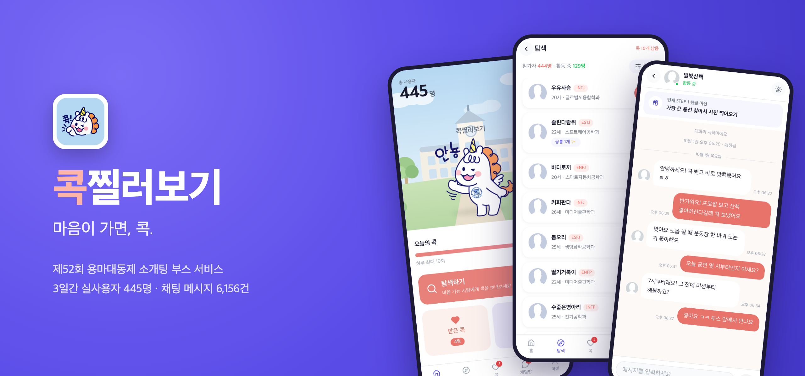
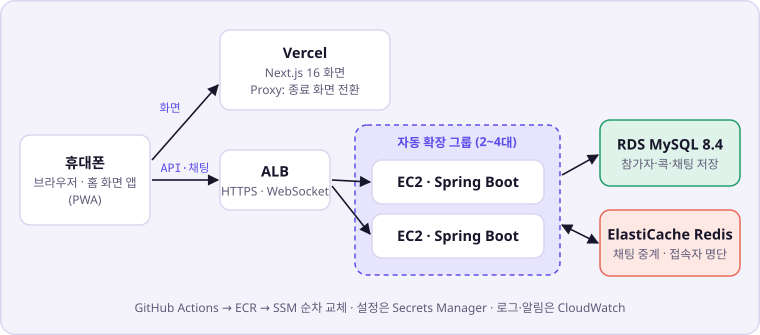
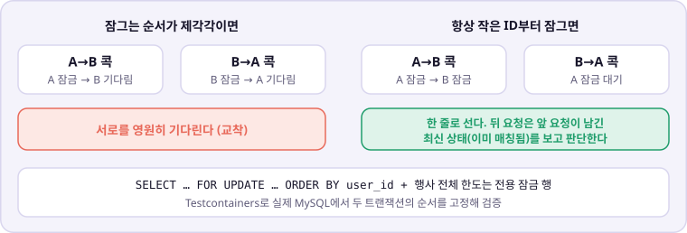
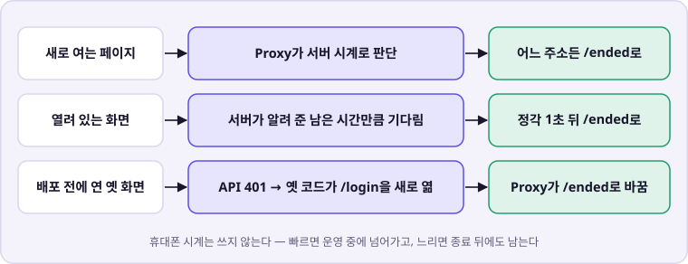

잘못된 개선 차단: 개발 세트에서 좋아진 가중치를 홀드아웃으로 재검증해 정답률 84.6% → 80.8% 하락을 확인하고 채택하지 않음
환각 방지 구조: 검색된 문장만 고를 수 있는 응답 스키마와 코드 → 수치 → LLM 3단 검증
색인 정합성: 측정 중 벡터 검색에서 통째로 빠진 문서(108개 청크)를 찾아 정합성 검사 추가
기타 경험
KB IT's Your Life 해커톤 — 소때잡(기간 작성 예정)코사인 유사도 검색을 하이브리드 검색으로 전환 (내용 정리 중)
KB IT's Your Life 7기 수료(기간 작성 예정)
학력 & 자격
Certifications
SQL 개발자(SQLD)취득일 작성 예정
정보처리산업기사취득일 작성 예정
Education
작성 예정
팀 프로젝트 · BE 2 · FE 2 · 팀장 · 백엔드 · 인프라 · 운영
콕찔러보기 — 축제 3일 실서비스 운영과 성능·동시성 개선
개발 2026.09.01 ~ 09.29 · 운영 09.30 ~ 10.02 · BE 커밋 122 · PR 78 · FE 커밋 77 · PR 49

프로젝트 소개
대학 축제 소개팅 부스에서 쓰는 서비스입니다. 참가자가 QR로 들어와 서로를 둘러보고 콕을 보내며, 받은 콕에 콕으로 답하면 매칭되어 채팅방이 열립니다. 매칭된 두 사람은 대화하며 3단계 랜덤 미션을 풀고 운영진이 부스에서 완료를 확인합니다.
축제 3일 동안 가입 445명, 콕 1,885건, 매칭 463건, 채팅 메시지 6,156건이 오갔습니다. 요청 44만 건을 처리하는 동안 배포 시각을 뺀 서버 오류율은 0.002%, 1분 단위 응답 p95 중앙값은 28ms였고, 정상 서버는 내내 2대를 유지했습니다.
맡은 역할
팀장. 백엔드 설계·구현(커밋 96%) — 인증·콕·매칭·STOMP 채팅·웹 푸시·서비스 종료
AWS 인프라 구성과 GitHub Actions·SSM 무중단 배포 파이프라인
k6 부하 테스트(7차 + 휴대폰 환경 흉내 600명)와 운영 모니터링·장애 대응
프론트엔드의 실시간 채팅 안정성(ACK·재전송·대조)과 조회 최적화
구성

두 서버 사이 채팅은 Redis Pub/Sub로 중계하고, 배포는 서버를 한 대씩 교체합니다.
트러블슈팅
1. 900명 부하에서 탐색 API가 느려지는 문제
문제
참가자 900명과 채팅 450명을 재현한 부하에서 응답 p95가 0.98초, DB CPU가 80%였고 서버가 4대까지 늘었습니다. DB 사양은 올리지 않고 해결해야 했습니다.
판단
DB 등급이 쿼리별 분석 기능을 지원하지 않아 MySQL 자체 통계(performance_schema)를 측정하는 동안만 켰습니다. 참가자 전원을 읽는 탐색 목록 쿼리가 호출 수는 적어도 DB 시간의 33%를, 트랜잭션을 여닫는 명령이 약 25%를 쓰고 있었습니다. 자동 커밋을 끄면 명령이 더 줄지만 트랜잭션 밖의 쓰기가 오류 없이 버려져(통합 테스트 8개 실패) 그 방법은 제외했습니다.
기여
탐색 목록을 서버 메모리에 10초 보관해 몰려도 DB 조회는 한 번만 하게 했습니다. 읽기 전용 전환 명령을 DB로 보내지 않고 활동 시각 갱신을 메모리에서 먼저 걸러, 요청 하나가 보내는 DB 명령을 19번에서 11번으로 줄였습니다. 응답 JSON 압축도 켰습니다(244KB → 12KB).
결과
같은 부하에서 응답 p95 0.98초 → 0.07초, 요청당 DB 시간 6.2ms → 2.9ms, DB CPU 80% → 56%, 필요한 서버 4대 → 2대.
배운 점: 느린 쿼리 하나만이 아니라 자주 불리는 작은 명령도 병목이 됩니다. 감이 아니라 측정한 비중대로 순서를 정했습니다.
2. 행사 콕 한도 잠금에 요청이 줄 서는 문제
문제
행사 전체 하루 콕 한도를 지키려고 모든 콕 전송이 잠금 행 하나를 차례로 지나갔습니다. 운영 DB에서 초당 50건부터 p95가 2초, 60건에서 4초를 넘었고, 잠금을 기다리는 요청이 DB 연결을 쥐고 있어 콕과 관계없는 API와 헬스체크까지 느려졌습니다.
판단
측정 중 2초마다 InnoDB 잠금 대기를 떠 보니 453건 중 448건(99%)이 그 잠금 행이었고 DB CPU는 24%였습니다. DB가 바쁜 것이 아니라 잠금을 쥐는 시간이 길다고 판단했습니다. 잠금 안에서 오늘 콕 수를 세는 쿼리가 인덱스 없이 8ms를 쓰고 있었습니다. 잠금 자체를 Redis로 바꾸는 방법은 행사 직전에 바꾸기엔 위험이 커서 행사 뒤로 미뤘습니다.
기여
실패할 검사를 잠금 앞으로 옮겨 잠금 안 명령을 8개에서 4개로 줄이고, 격리 수준을 READ COMMITTED로 낮추고, sent_at 인덱스를 추가했습니다. 서버당 동시 전송을 4건으로 제한하고 0.5초를 넘게 기다리면 429로 돌려보내, 몰림이 다른 API로 번지지 않게 했습니다.
결과
전송 처리 한계 초당 40~50건 → 60~90건. 초당 90건이 몰려도 콕 목록·헬스체크는 평소 속도를 유지했습니다(헬스체크 중앙값 871ms → 6ms, DB 연결 대기 177건 → 0건).

같은 두 사람의 보내기·취소·거절은 항상 작은 ID부터 잠가 교착을 막고, 실제 MySQL에서 두 트랜잭션의 순서를 고정해 검증했습니다.
3. 종료 시각에 열려 있는 모든 화면을 닫는 문제
문제
22:02 정각에 모든 화면을 후기 화면으로 바꿔야 했습니다. 그런데 홈 화면에 추가한 앱은 며칠씩 새로고침 없이 열려 있고, 배포 전에 연 화면에는 새 코드가 없었습니다.
판단
옛 화면 코드가 API에서 401을 받으면 로그인 화면으로 페이지를 새로 여는 동작을 찾았습니다. 종료 뒤 BE가 401을 주면 그 새로 열기가 FE 서버를 거치면서 종료 화면으로 바뀝니다. 410이나 503을 주면 옛 화면은 움직이지 않습니다. 휴대폰 시계는 틀릴 수 있어서, 언제 바꿀지는 서버가 알려 준 남은 시간으로 정했습니다.
기여
종료 시각 하나로 BE의 API·채팅 소켓·푸시를 막고(후기 제출만 허용), FE 서버(Proxy)가 모든 주소를 종료 화면으로 보내고, 열린 화면은 남은 시간만큼 기다렸다가 넘어가게 했습니다. 익명 후기 API에는 접속 주소별 1분 5건 제한을 두었습니다.
결과
옛 빌드로 직접 재현해 옛 화면이 종료 화면으로 넘어가는 것을 확인했고, 휴대폰 시계를 10분 느리게·빠르게 바꾼 화면도 정각에만 넘어가는 것을 검증했습니다. 22:02에 전환됐고 후기 37건을 받았습니다.

4. 첫날 웹 푸시가 나가지 않은 문제 — 실패에서 배운 것
문제
행사 첫날 웹 푸시 발송 257회가 실패했습니다. 콕·매칭·채팅은 정상 처리돼서 API 응답만 봐서는 드러나지 않았습니다.
판단
로그의 오류와 코드 이력을 보니, 푸시에 제한 시간을 넣던 변경에서 암호화 제공자를 등록하는 줄의 순서가 바뀌어 있었습니다. AI로 만든 변경을 목적(제한 시간)만 보고 리뷰해 이 줄을 놓쳤고, 테스트는 제공자를 미리 등록해 둔 상태라 오류를 가렸습니다.
기여
제공자 등록을 알림 생성 앞으로 옮기고, 제공자가 없는 상태의 첫 발송을 검증하는 회귀 테스트를 추가해 그날 밤 배포했습니다.
결과
이후 같은 오류는 0건입니다.
배운 점: AI가 만든 변경은 의도한 부분만이 아니라 diff 전체를 리뷰합니다. 테스트 환경이 운영과 다르면 통과해도 안심하지 않고, 외부로 나가는 기능은 운영 경로로 끝까지 확인합니다.
품질 · 검증
BE 테스트 455개 — 동시성·마이그레이션은 Testcontainers로 운영과 같은 MySQL 8.4에서 검증, Docker가 없으면 건너뛰지 않고 실패
FE 단위 테스트 94개 — 폴링 순번·종료 판단 같은 경합 로직을 React 없는 순수 모듈로 분리해 테스트
k6 부하 테스트 — 900명 + 채팅 450명, 콕 몰림, 휴대폰 네트워크 흉내 600명, 재접속 폭주·서버 교체, 1시간 연속
CloudWatch 대시보드와 알림 4개, 느린 요청·DB 연결 대기·푸시 실패 로그
팀 프로젝트 · AI 서버 전담
FirstFolio AI — 근거 기반 금융 퀴즈를 만드는 RAG 서버
2026.07 ~ 2026.08 · AI 서버 커밋 118 · PR 75
프로젝트 소개
금융을 처음 배우는 사람을 위한 교육 서비스 FirstFolio의 AI 서버입니다. 금융 교과서와 뉴스를 검색해 근거가 있는 퀴즈(OX·4지선다·시나리오)를 만들고 자동으로 검증한 뒤, 메인 Spring 서버로 전달합니다.
품질은 두 부분으로 나뉩니다. 맞는 근거를 찾는 검색, 그리고 그 근거로만 문제를 만드는 생성입니다. 둘 다 측정할 수 있게 평가 세트와 지표를 먼저 만들고 그 위에서 개선했습니다.
맡은 역할
문서 등록·문서 유형별 청킹(교과서 제목 계층, 뉴스 기사·문단)
Kiwi·BM25 키워드 검색 + OpenAI 임베딩·FAISS 벡터 검색의 하이브리드 검색(RRF)
구조화 퀴즈 생성과 3단 검증, 배치 Dry Run, Spring 연동 API
검색 품질 평가(Hit@5·MRR@5) 설계와 측정, S3 원문·인덱스 백업, Docker 배포
트러블슈팅
1. 검색 근거가 제목 조각으로 채워지는 문제
문제
검색 상위 5개를 근거로 문제를 만드는데, "3.2 정기적금"처럼 제목만 있는 조각이 상위에 올라왔습니다. 단어가 겹쳐 검색에는 걸리지만 근거로는 쓸 수 없었고, 7개 주제의 근거 35개 중 쓸 만한 것은 21개(60%)였습니다.
판단
"근거가 별로인 것 같다"는 느낌을 근거 품질 지표로 바꿔 계량했습니다. 전체 청크의 27.8%가 문장으로 끝나지 않는 짧은 조각이었고, 검색 알고리즘이 아니라 청킹이 병목이라고 판단했습니다.
기여
교과서의 번호형 제목 계층을 각 청크에 전파하는 청커를 만들고, 짧은 조각을 뒤의 본문과 합치는 규칙을 넣었습니다. 다시 청킹하면 청크 키가 바뀌므로, 평가 정답을 원문 문장으로 다시 찾게 해 측정을 이어 갈 수 있게 했습니다.
결과
청크 1,126개 → 831개(−26.4%, 진단한 27.8%와 거의 일치), 쓸 만한 근거 60% → 91%, 벡터 검색 Hit@5 88.5% → 92.3%, 하이브리드 MRR 0.894 → 0.917.
2. 지표가 좋아진 가중치를 채택하지 않은 이유
문제
교과서 용어를 그대로 쓴 평가 질문은 정답률(Hit@5)이 이미 100%라 개선을 가려낼 수 없었습니다. 일상어로 바꾼 질문 26개를 새로 만들자, 하이브리드(92.3%)가 키워드 검색 단독(96.2%)보다 오히려 낮았습니다.
판단
RRF 점수를 직접 계산해 보니 현재 가중치에서는 벡터 검색 1위 점수(0.00492)가 키워드 검색 20위 점수(0.00875)보다 낮아, 벡터 검색만 찾은 청크는 최종 5개에 들어올 수 없는 구조였습니다. 가중치와 RRF 상수를 바꿔 개발 세트 지표를 모두 올린 후보를 찾았지만, 그 세트를 보면서 고른 값이라 과적합일 수 있다고 봤습니다.
기여
후보를 고를 때 한 번도 쓰지 않은 홀드아웃 질문 26개를 따로 작성해, 설정을 고정한 채 다시 측정했습니다.
결과
후보는 MRR을 0.621 → 0.700으로 올렸지만 정답률이 84.6% → 80.8%로 떨어졌습니다(질문 하나를 더 놓침). 이 서비스에서 근거를 못 찾으면 문제를 아예 만들 수 없으므로 순위 개선보다 놓침이 더 치명적이라고 판단해, 운영 설정을 유지했습니다.
배운 점: 지표를 올리는 것보다 지표에 속지 않는 것이 어렵습니다. 성능을 못 올린 것이 아니라 잘못된 개선을 막은 사례로 기록했습니다.
3. 근거에 없는 문장을 인용하는 환각
문제
LLM이 근거에 없는 문장을 인용하거나, A 청크의 키에 B 청크의 문장을 붙여 출처가 틀린 문제를 만들 수 있었습니다.
판단
프롬프트로 부탁하는 대신 응답 형식으로 불가능하게 만드는 쪽을 골랐습니다. LLM이 만든 문제를 LLM으로만 검증하는 것은 믿을 수 없어서, LLM 검증은 첫 방어선이 아니라 마지막 안전망으로 두었습니다.
기여
검색 결과가 나온 뒤 그 청크들의 문장만 허용하는 응답 스키마를 실행 중에 만들고, 청크 키와 근거 문장을 한 쌍으로 묶어 structured output으로 강제했습니다. 검증은 코드 규칙(인용 원문 일치·선택지 형식·영어 혼용) → 금융 수치 대조 → LLM(논리·복수 정답) 순서로 나눴습니다.
결과
키와 문장이 어긋난 근거는 응답 형식상 나올 수 없게 됐습니다. 코드로 판단할 수 없는 대단원 시나리오 문항은 사람 검수를 거쳐 게시했습니다.
4. 오류 없이 결과만 틀린 색인 누락
문제
검색 품질 기준선을 재는 중에 문서 하나(108개 청크)가 벡터 검색에서 통째로 빠져 있는 것을 발견했습니다. 오류는 하나도 나지 않고 결과만 틀리고 있었습니다.
판단
소리 없이 틀리는 것이 가장 위험한 버그라고 봤습니다. 벡터 파일과 청크 키 매핑의 순서가 어긋나거나 개수가 다르면 엉뚱한 청크가 반환됩니다.
기여
인덱스를 불러올 때 벡터 수와 키 수를 비교하고, MySQL 청크 수와도 비교하는 정합성 검사를 넣었습니다. 품질 측정은 불일치하면 중단하고, 서비스 기동은 경고만 남기고 진행하도록 두 경로를 나눴습니다.
결과
재색인으로 누락을 바로잡았고, 이후 같은 누락은 측정 단계에서 바로 드러나게 됐습니다.
품질 · 검증
테스트 함수 474개 — OpenAI·S3·MySQL은 테스트 대역으로 바꾸고, 실제 MySQL 통합 테스트는 따로 실행
평가 세트 3종(정형 26 · 일상어 26 · 홀드아웃 26)으로 Hit@5·MRR@5 측정, 결과는 JSON으로 보관